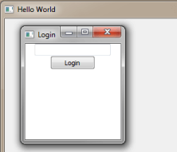

Qt WebChannel ChatClient QML Application
A QML client that communicates over a WebSocket with a QWebChannel server.

ChatClient QML provides a simple QWebChannel client implemented using JavaScript and QML.
Implementing a Web Channel Client in QML
This example shows how you can use the basic elements with the client JavaScript implementation of QWebChannel, like connecting to signals (newMessage), calling slots (sendMessage), and handling property changes (userList).
The client initializes a WebSocket connection to the chat server at port 12345 on localhost. When the WebSocket opens, a WebChannel object is created, taking the WebSocket as first argument and a callback function as the second argument. When the callback is called, the client receives an object named chatserver, containing all the necessary signals, slots, and properties for implementing a chat client. The callback function connects userListChanged, newMessage, and keepAlive on the chatserver object with separate functions handling those signals, and then it calls show on loginWindow.
The Window with loginWindow as id handles the login procedure. It contains a LoginForm defined in LoginForm.ui.qml. When you press the button, it calls the login function on the chatserver object with the login name and and a callback function as arguments. This callback function handles both if the login succeeds or fails.
After login, the client uses a MainForm, defined in MainForm.ui.qml, with mainUi as id, to post messages using the sendMessage slot, read messages using the newMessage signal, and to view the names of all connected users using the userList property. Also, the client responds to the server's keepAlive signal in order for the server to detect disconnected clients and remove them from the userList property.
The client is able to work with the Qt WebChannel ChatServer Example.
See also Qt WebChannel ChatServer Example and Qt WebChannel ChatClient HTML Example.